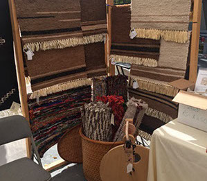

Art Through The Loom(ATTL) Upcoming Events
Upcoming Events
- The Wool Shed’s Annual Earth day event. Call Victoria Collins for dates and times at 505.204.6127
- ATTL Meeting - June 15, 2019, 10:30 am, Location: Santa Fe
- ATTL Rag Rug Show in Santa Fe, Montezuma Lodge August 9-11, 2019. Contact Sandy Voss at sandyvoss@cybermesa.com
- Taos Wool Festival is October 5th & 6th, 2019

Natural Dye Kits
ATTL is selling natural dye kits. The kits include everything you need to get started using Natural Dyes. A small skein of yarn, ready to dye(mordanted), and natural plant materials. If you have any questions about the kits please email Sandy Voss, sandyvoss@cybermesa.com, or Glenna Dean, puchteca@windstream.net. If you wish to purchase the dye kits they are 20$ plus shipping. Please use the add to cart button. Currently we are only offering Chamisa, Snakeweed, and black walnut.(please email for other kits) The shipping is $10, this is a rough estimate, you will be refunded any shipping overcharges and invoiced for shipping costs that are undercharged. The invoices/refunds will come from our email arthroughtheloom@gmail.com


Taos Wool Festival
Once again we will have a booth at Taos Wool Festival in 2019. Be sure to stop by and get wonderful deals on handwoven rugs, handspun yarn, hand felted items and other handmade items. Last years booth was fantastic. Thank you to everyone who purchased our items.
Congratulations to Guild Members Judy Chapman and Barbara Roybal who won blue ribbons in 2018 at the Taos Wool Festival
Art Through The Loom promotes weaving and fiber arts in Northern New Mexico. The ATTL members are fiber artists with a strong commitment to weaving and all fiber arts.
Art Through the Loom Guild members are a diverse community of fiber artists who come together from primarily northern New Mexico to access markets and learn from one another as textile professionals.
“In many primitive cultures weaving, spinning and dyeing constitute one of the major occupations, possibly second only to farming. In our technical society, because we are free from the need to pursue these crafts, the majority of us are not acquainted with the pleasure they give. Undoubtedly it is in man’s nature to be creative, and although few of us would trade our lives for the hardships of primitive man, we do find satisfaction in creating objects for our own use, or just things of beauty to have or to give to a friend.” by Rachel Brown
Reprinted with permission from the Weaving, Spinning and Dyeing Book.